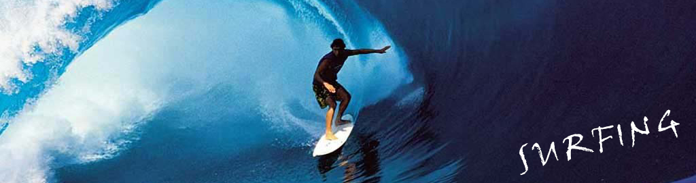

|  |
冲浪可以让人们忘却烦恼，体验一次次与海浪搏击、驰骋在海浪上的快感。这就是为什么在世界上每天都会有许多人四处寻找着一处最完美的冲浪胜地，仅为完成一次与海浪的完美追逐。国人不出国门冲浪的最好去处分别是广东深圳冲浪学校、海南万宁日月湾、三亚冲浪学校。 冲浪运动起始于澳大利亚，由于澳大利亚四面环海，气候温暖，多日照而少阴雨，有利于水上运动的发展，故而澳大利亚人特别喜爱冲浪运动。早在欧洲人迁来之前，这里的土著人，乘独木舟浮海时，就凭一叶扁舟忽而冲上浪峰，忽而滑向浪谷，这就是冲浪运动的前身 公元1820年4月4日，美国波士顿的喀尔文教派(Calvinist)由希蓝・宾汉牧师(Rev. Hiram Bingham)带领着十四位牧师，前往夏威夷传教，此后各教派陆续派人前往传教。但是，宗教传入造成了冲浪文化的黑暗期，部份原因是受到基督教工作的排斥，指责它是种使人玩物丧志�A娱乐，这个黑暗期一直延续到十九世纪末年。直到1898年8月12日，美国政府正式接收夏威夷主权后，就开始致力推展夏威夷的观光事业，而使夏威夷冲浪文化又再度兴盛流行。 |
| 《上一个 | 下一个》 |